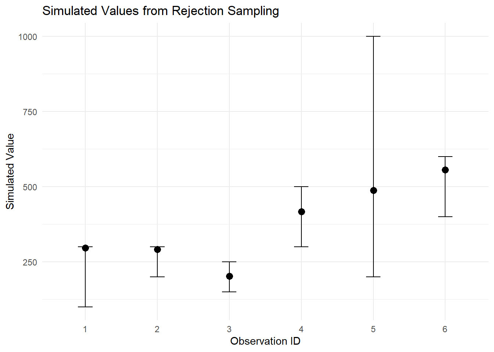

Simulating Continuous Values via Rejection Sampling from a Global Normal Distribution
Background
In this approach, we simulate continuous values from categorical intervals using rejection sampling based on a global normal distribution.
Each original bin (e.g., [100, 200]) acts as a domain for candidate values, but the acceptance is based on whether the candidate lies under the bell curve of a global normal distribution.
This allows us to simulate realistic values that:
Stay within original bounds
Enable continuous modeling like linear regression
Step-by-Step Summary
Define a global normal distribution \(w∼N(μ,σ^2)\) where:
\(μ\) is the midpoint of the entire observed range.
\(σ= \frac{\text{range width}}{6}\) = so that ~99.7% of values fall within bounds.
For each row in the data:
a. Sample a value candidate \(x\) from the uniform distribution over the category range \([a_i, b_i]\).
b. Sample \(y∼U(0,f_{max})\) where \(f_{max}\) is the maximum of the global normal density (occurring at \(x=μ\) ).
R implementation
empirical_data <-data.frame(id =1:6,category_min =c(100, 200, 150, 300, 200, 400),category_max =c(300, 300, 250, 500, 1000, 600))global_min <-min(empirical_data$category_min)global_max <-max(empirical_data$category_max)global_mu <- (global_min + global_max) /2global_sigma <- (global_max - global_min) /6f_max <-dnorm(global_mu, mean = global_mu, sd = global_sigma)# Verbose rejection sampling with print statements and iteration countsimulate_verbose <-function(min_val, max_val, mu, sigma, f_max, row_id =NA) { iter <-0repeat { iter <- iter +1 x_candidate <-runif(1, min = min_val, max = max_val) y <-runif(1, min =0, max = f_max) fx <-dnorm(x_candidate, mean = mu, sd = sigma)if (y < fx) {message(glue::glue("Row {row_id}: Accepted x = {round(x_candidate, 2)} on iteration {iter}"))return(x_candidate) } else {message(glue::glue("Row {row_id}: Rejected x = {round(x_candidate, 2)}")) } }}# Apply simulation row-wise with purrr::map2 and verbose outputset.seed(42)empirical_data$simulated_value <- purrr::map2_dbl( empirical_data$category_min, empirical_data$category_max,~simulate_verbose(.x, .y, mu = global_mu, sigma = global_sigma, f_max = f_max,row_id = empirical_data$id[which(empirical_data$category_min == .x & empirical_data$category_max == .y)[1]]))
Row 1: Rejected x = 282.96
Row 1: Rejected x = 157.23
Row 1: Rejected x = 228.35
Row 1: Rejected x = 247.32
Row 1: Rejected x = 231.4
Row 1: Rejected x = 191.55
Row 1: Rejected x = 286.93
Row 1: Rejected x = 192.46
Row 1: Accepted x = 295.65 on iteration 9
Row 2: Rejected x = 247.5
Row 2: Accepted x = 290.4 on iteration 2
Row 3: Rejected x = 248.89
Row 3: Rejected x = 158.24
Row 3: Rejected x = 189.02
Row 3: Rejected x = 194.7
Row 3: Rejected x = 223.76
Row 3: Rejected x = 188.81
Row 3: Rejected x = 150.39
Row 3: Rejected x = 150.73
Row 3: Rejected x = 240.66
Row 3: Rejected x = 187.96
Row 3: Rejected x = 153.74
Row 3: Rejected x = 193.18
Row 3: Rejected x = 238.78
Row 3: Rejected x = 247.1
Row 3: Rejected x = 183.34
Row 3: Rejected x = 189.85
Row 3: Rejected x = 153.89
Row 3: Rejected x = 217.73
Row 3: Rejected x = 176.11
Row 3: Rejected x = 217.56
Row 3: Rejected x = 225.95
Row 3: Rejected x = 234.97
Row 3: Rejected x = 177.13
Row 3: Rejected x = 219.32
Row 3: Rejected x = 154.3
Row 3: Rejected x = 171.64
Row 3: Rejected x = 169.74
Row 3: Rejected x = 150.79
Row 3: Accepted x = 201.44 on iteration 29
Row 4: Accepted x = 416.32 on iteration 1
Row 5: Accepted x = 487.22 on iteration 1
Row 6: Accepted x = 555.16 on iteration 1
# Show the final simulated datasetprint(empirical_data)
library(ggplot2)ggplot(empirical_data, aes(x =factor(id), y = simulated_value)) +geom_point(size =3) +geom_errorbar(aes(ymin = category_min, ymax = category_max), width =0.2) +labs(x ="Observation ID", y ="Simulated Value",title ="Simulated Values from Rejection Sampling") +theme_minimal()

Conclusion
This method simulates continuous values that:
Respect original categorical bins
Are more likely to be accepted near the center of a plausible global distribution
Can be used as inputs to linear models or other numeric frameworks by combining interval constraints with a global density shape, the method balances interpretability, flexibility, and statistical plausibility.